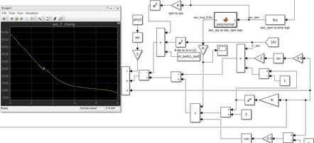
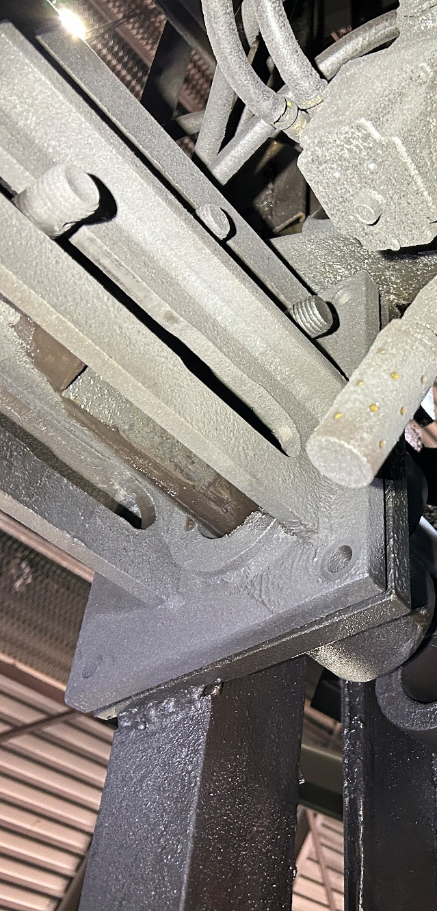
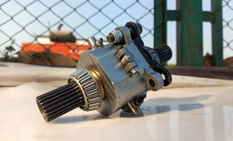
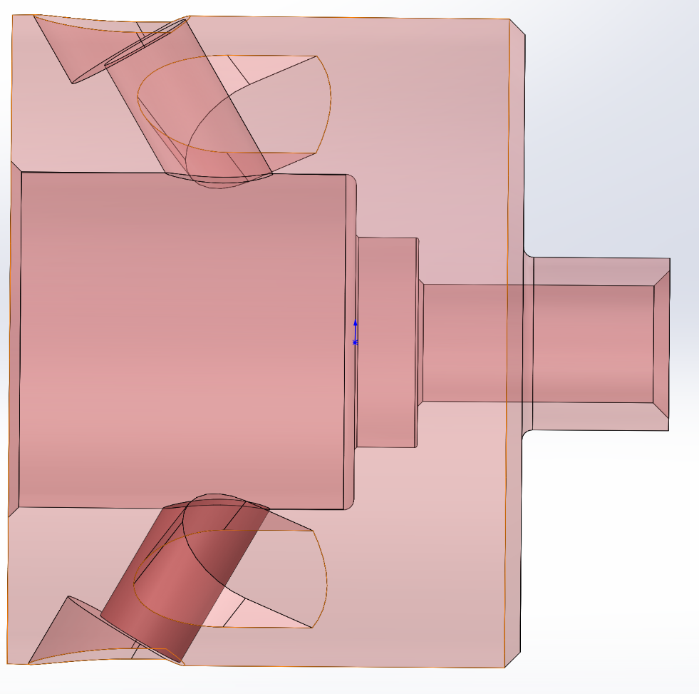
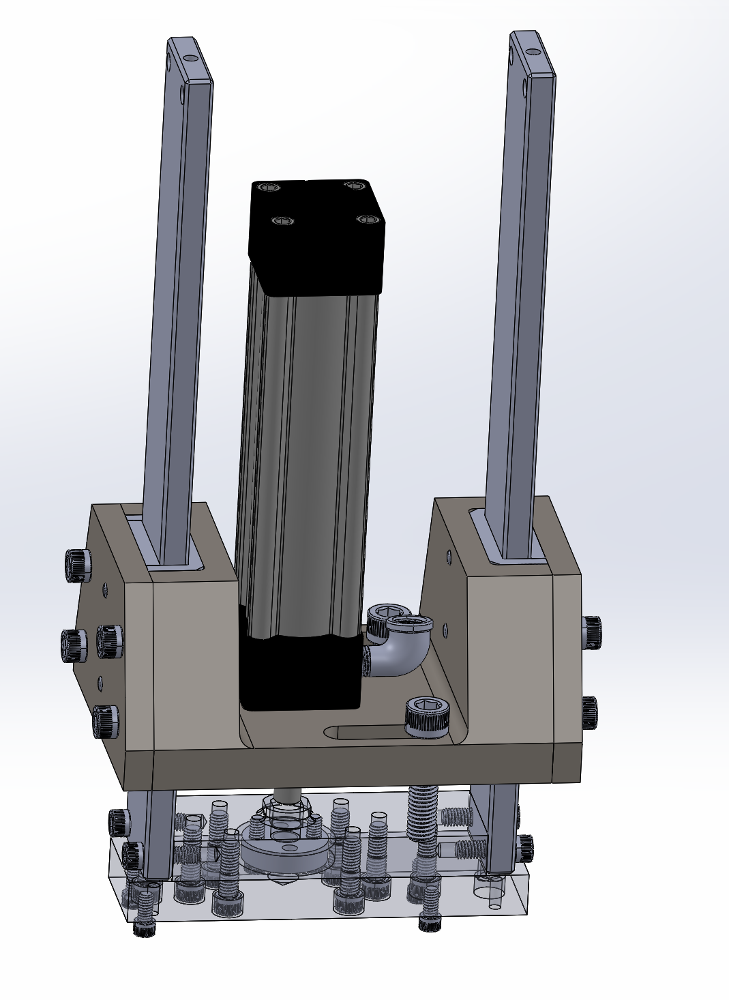
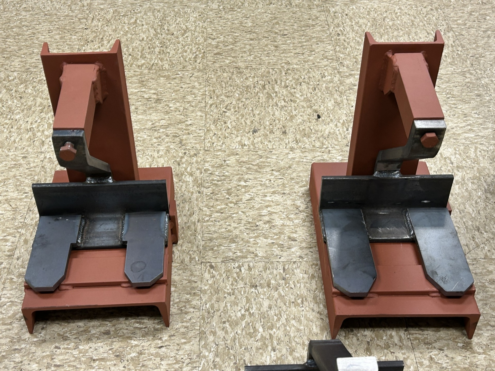

Design / Test & validation
CVT / ECVT modeling & DAQ
Built a data-acquisition system to compare real drivetrain behavior with a CVT simulation.
DAQ built and compared with modelInstrumentation, model comparisons, fit checks, and production trials.
6 projects

Built a data-acquisition system to compare real drivetrain behavior with a CVT simulation.
DAQ built and compared with model
Combined PLC logic tracing, electrical diagnosis, and robot maintenance to investigate production equipment faults.
Hands-on equipment support
Designed and analyzed a cage-less open differential for a four-wheel-drive ATV.
Design, analysis & hardware
Implemented a sleeve to address extrusion runout, then developed a holder redesign with production and maintenance feedback.
<2% runout-related reject rate
Developed a custom heater hold-down through CAD iterations and 3D-printed fit checks, with attention to service access.
Prototype fit checks completed
Checked a supplier-built conveyor-hook fixture in CAD and at delivery, then helped trial marked sample hooks on the line.
Fixtures inspected; limited line trial completedTry a different project name, tool, or skill.
Mechanical Design / Manufacturing / Test Engineering